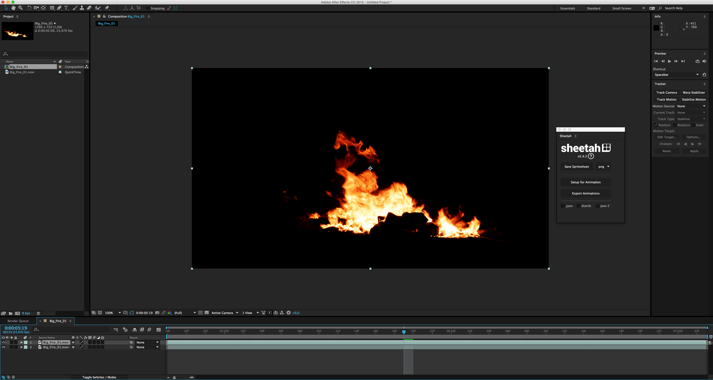
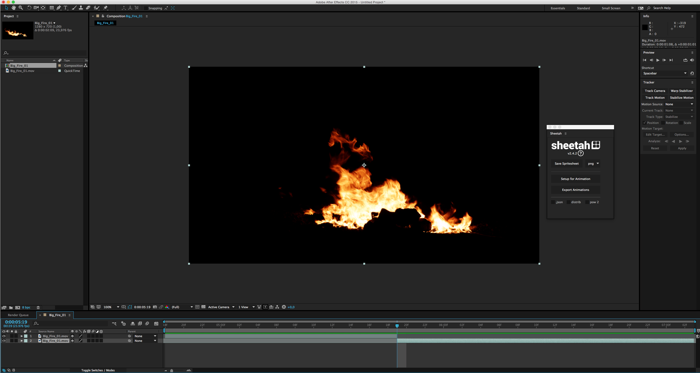
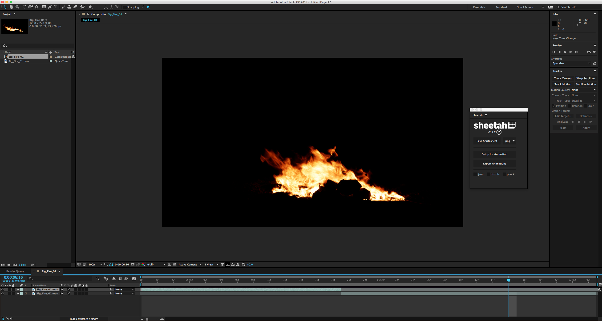
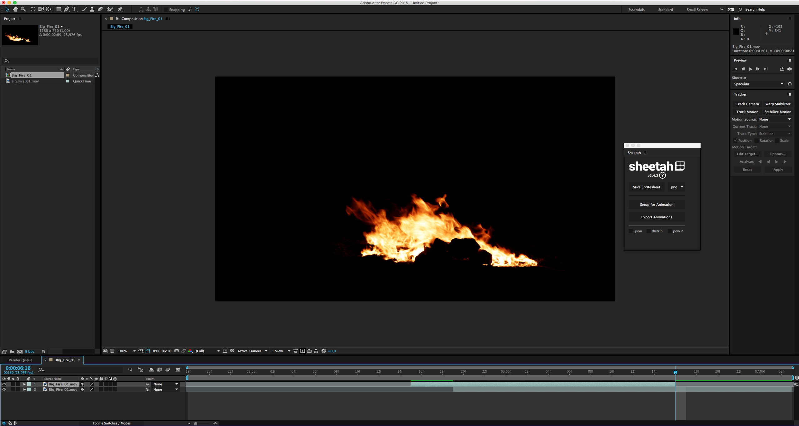
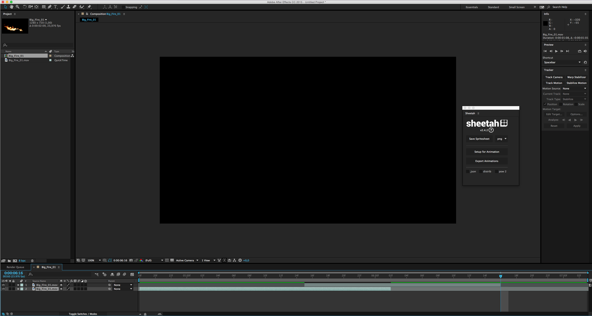
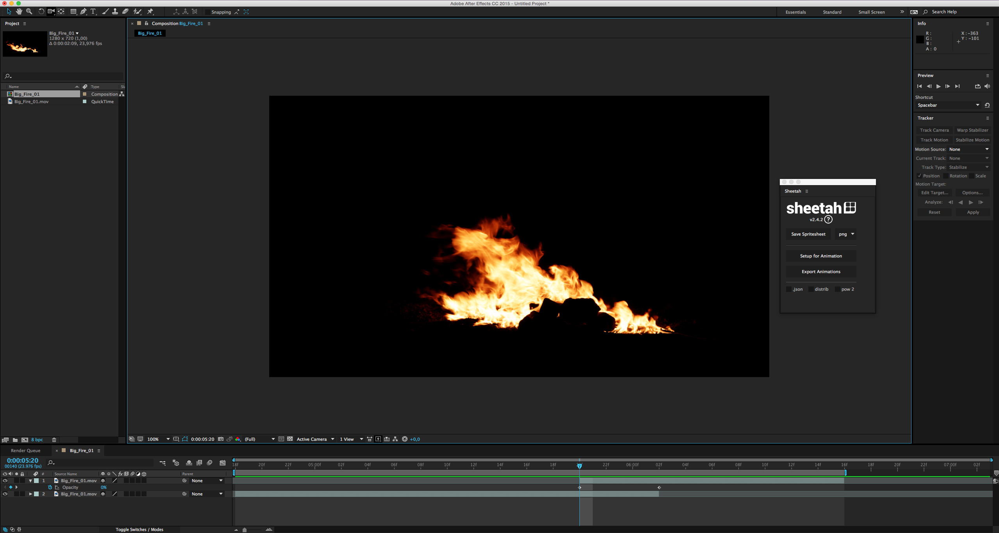
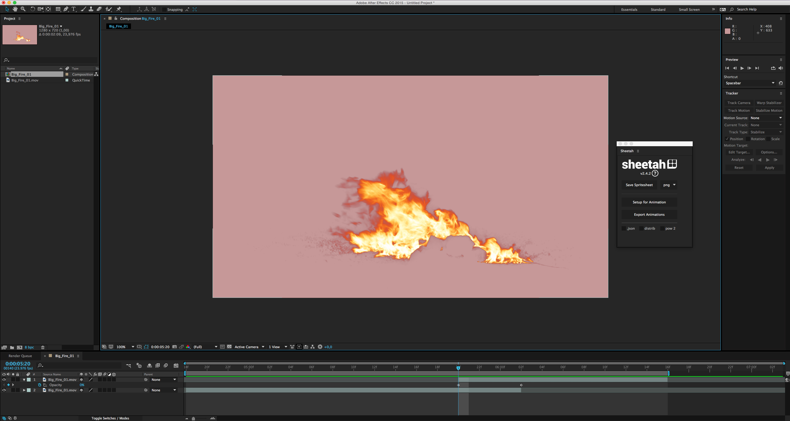

1 Prendere un video di circa la lunghezza desiderata, portarlo su After Effect
2 Posizionarsi con l'indicatore della timeline circa al centro

3 Tagliare il primo video da quel punto in poi, e il secondo (quello sotto) da quel punto a "prima"

4 Posizionarsi ad un punto circa a 3/4 della timeline

5 Spostare il primo video dall'inizio a quel punto (rimani con l'indicatore li per avere un riferimento)

6 E il secondo video invece indietro fino all'inizio della timeline. A questo punto l'inizio e la fine del video coincidono, quindi possiamo cominciare a lavorare sull'overlap centrale.

7 Possiamo semplicemente sfumare in entrata il primo video (quello che sta sopra)
8 Oppure sfumarlo in punti diversi, per trovare il momento migliore in cui fare "il cambio."

9 Renderizziamo il video e abbiamo il nostro loop perfetto. Si possono usare anche video con fondo trasparente per fare una sprite animata grazie a Sheetah e javascript
